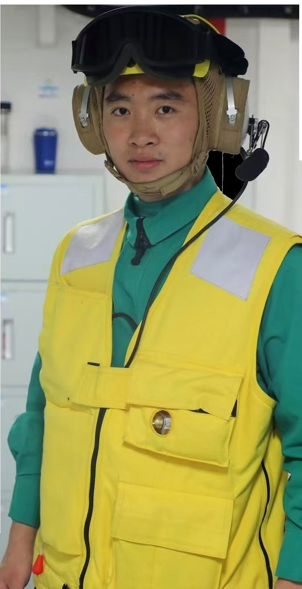

合肥 · 2026
我是中国矿业大学经济管理学院 2025 级工业工程与管理硕士，本科在安庆师范大学读电子商务。现在做的事，是把设备退化中的不确定性，翻译成备件与维修可以执行的决策。
2021 到 2023 年，我在海军山东舰做舰载机起飞保障。甲板上的每个动作都要拆成可复核的清单，错了没有第二次机会。这个习惯后来变成了我写代码和写论文的方式：先定流程，再谈优化。
离开部队后，我在安庆恒昌机械做过四个月运营优化，为跨境定制设备项目搭文档解析与字段核对流程；2026 年 8 到 10 月，在蔚来 EDS 电驱售后做 FAE 实习，接触真实的失效案例、轴承与齿轮噪声问题。现在这两条线合在一起，就是我的研究方向：预测性维修与备件库存的联合优化。
中国矿业大学（211 / 双一流）工业工程与管理硕士，学业排名 5/25、加权 GPA 89.1/100，综合测评 6/25；本科安庆师范大学电子商务，专业排名 2/42。一篇 SCI 期刊论文一作在投，方向为备件库存与主动调拨。
四个月机械制造行业运营优化实习，主导跨境定制设备的文档解析流程设计：梳理交付、规格、工艺、品控四类字段，服务宝洁巴基斯坦、金百利中国等国际客户，业务人员整理订单信息的时间缩短约 40%。
海军山东舰服役两年，舰载机起飞专业操纵兵：夜航、实战演练、母港防护多场景保障，严格按 SOP 与检查单执行；舰上资格考核第一名、全程零差错，获评优秀新兵。高压环境下的标准作业与流程复核，后来也用在代码和论文里。
Python（Pandas / NumPy / Matplotlib）· SQL · Excel（透视表 / VBA 基础）· Minitab · PuLP 约束建模 · UiBot 流程自动化；MDP / POMDP 建模与 PPO / DQN 强化学习；用 Claude Code、Codex 这类 AI 编程助手加速脚本与文档处理。
把设备剩余寿命的后验分布建模为信念状态，映射成各服务点的短期需求风险，再用 PPO 训练风险感知的主动调拨策略。对比无调拨、被动调拨、无退化信息三类基线，看服务水平与应急订货频次的变化。成果整理为一篇 SCI 论文，一作在投。
面向蔚来 EDS 电驱售后场景：当设备状态可以被预测，修还是换、换下来的旧件去哪、备件在各层怎么放，就需要一起决定。规则层给阈值骨架，优化层定参数，再用仿真看联合决策比分开决策多拿到什么。
从全寿命振动数据里构造健康指标，划分退化阶段，识别早期故障特征。手上有 CWRU、MFPT、XJTU 几套公开数据，也在整理电驱总成的真实失效案例，想把实验室结论往工程现场推一步。
为定制设备的跨境订单设计文档解析模板与字段核对清单，梳理交付、规格、工艺、品控四类字段，配合 Python 脚本把非结构化文档转成可录入的结构化数据。业务人员整理订单信息的时间缩短了约四成。
用 UiBot 搭动态网页的采集流程，采集一万余条结构化学术数据；给网络波动和页面加载失败加了几层重试与告警，把采集成功率做到 98% 以上，交付的数据用在课题组两篇论文的综述与实证里。
在合肥辅导初中英语，把手写讲义做成了可在线浏览的课件站和试卷生成器：单元词汇、短语、句型、语法讲练、默写表成套出，按教材版本切模板，学生上课用的就是这套。